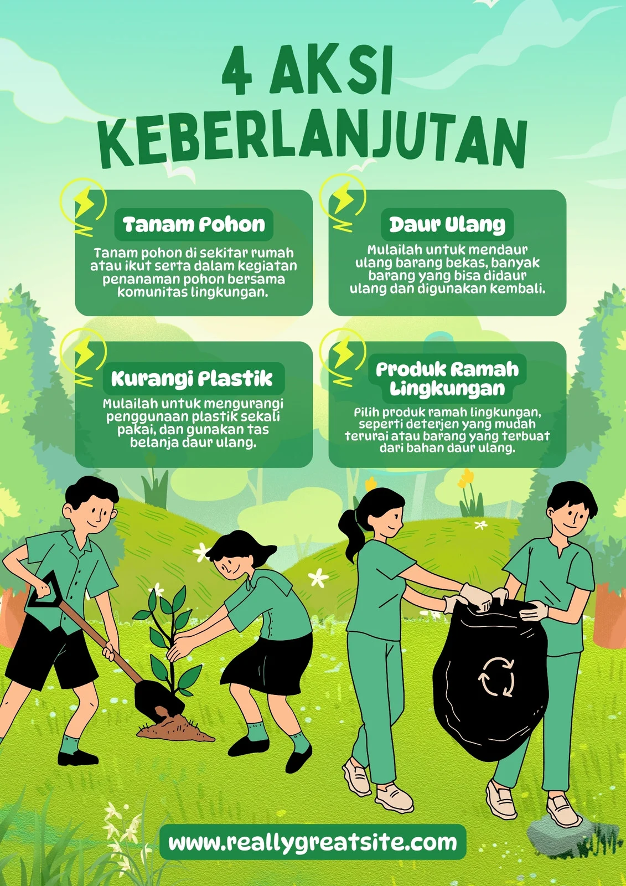
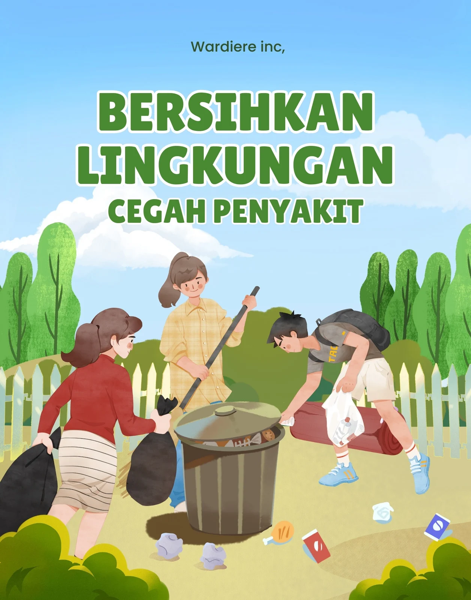

📋 Petunjuk Pengerjaan:
✓ Baca setiap soal dengan teliti dan cermat
✓ Jawab dengan argumentasi desain yang logis dan profesional
✓ Kirimkan jawaban Anda melalui Google Form yang telah disediakan
✓ Jawaban harus ditulis dengan bahasa yang baik dan sistematis
✓ Jawaban hasil pemikiran sendiri bukan kerja sama antar kelompok apalagi chat gpt
✓ Waktu pengerjaan: 60 menit
Sebuah perusahaan startup teknologi ingin tampil sebagai "inovatif dan ramah pengguna", namun juga ingin tetap terlihat "profesional dan tepercaya".
Sebagai desainer, bagaimana kamu menyusun strategi visual branding (warna, tipografi, gaya ilustrasi, dan tata letak) agar ketiga kesan tersebut muncul secara bersamaan tanpa saling bertentangan?
Jelaskan dengan argumen desain yang logis, bukan hanya pilihan warna atau font.
Kamu diminta menilai dua desain poster kampanye sosial:
- Poster A: Penuh warna, banyak teks, dan menampilkan banyak gambar kecil.
- Poster B: Sederhana dengan satu gambar utama dan sedikit teks.
Tanpa menilai secara subjektif, analisis efektivitas komunikasi visual dari kedua poster tersebut berdasarkan teori Gestalt, hirarki visual, dan prinsip emphasis.
 Sebuah desain logo baru menuai kritik karena dianggap "terlalu minimalis hingga kehilangan identitas".
Sebagai seorang desainer profesional, bagaimana kamu akan mengevaluasi kritik tersebut secara objektif, dan langkah-langkah apa yang akan kamu lakukan untuk menyeimbangkan antara kesederhanaan dan karakter merek?
Dalam proses revisi desain, klien menambahkan banyak permintaan yang menyebabkan hasil akhir kehilangan arah konsep awal.
Analisis bagaimana seorang desainer grafis profesional seharusnya bersikap dalam situasi seperti ini agar tetap mempertahankan nilai estetika dan fungsi desain, tanpa mengabaikan kebutuhan klien.
Kamu melihat tren desain di media sosial cenderung mengarah pada gaya "flat minimalism".
Sebagai desainer konseptual, bagaimana kamu menilai tren ini dalam konteks keberlanjutan estetika (visual sustainability) dan identitas lokal budaya Indonesia?
Apakah tren global selalu perlu diikuti, atau justru harus diadaptasi? Jelaskan dengan argumentasi desain dan etika profesional.